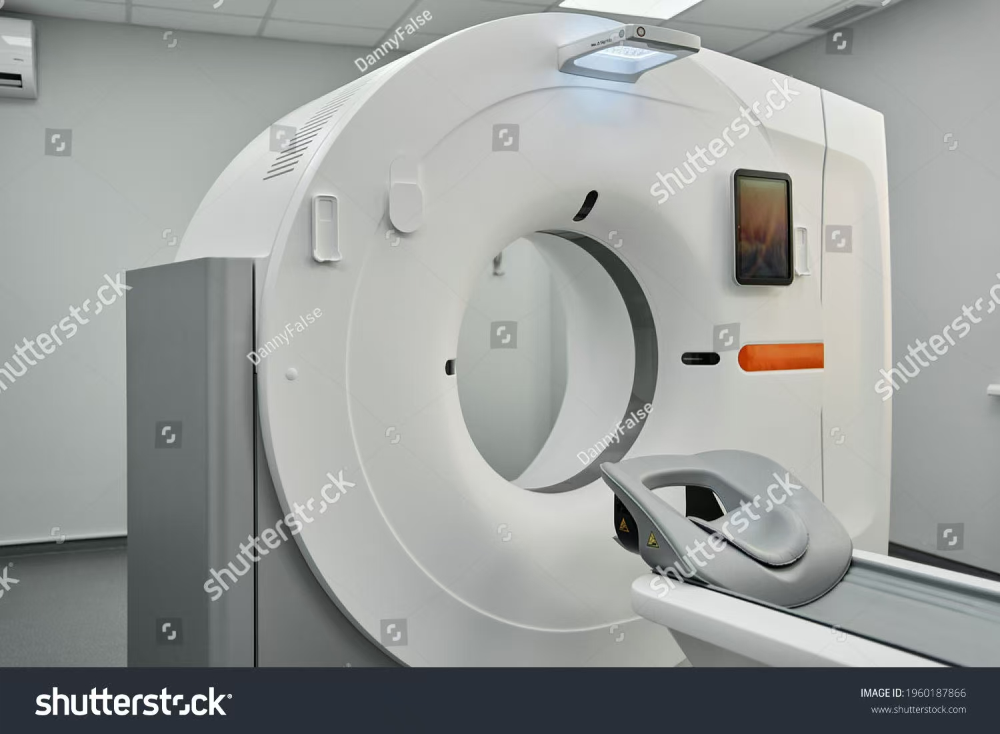
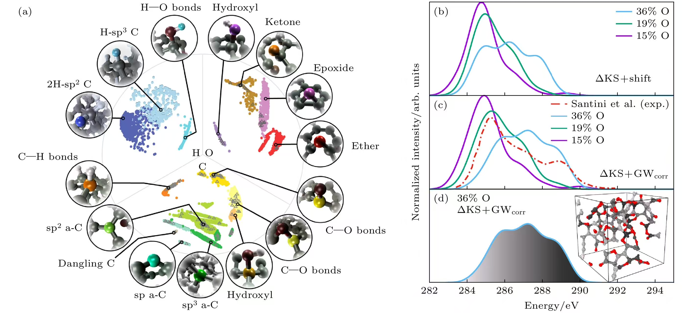
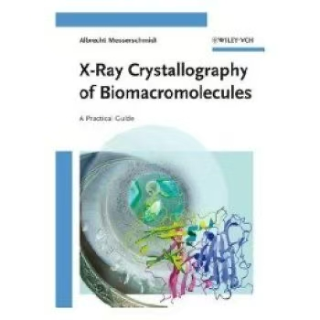
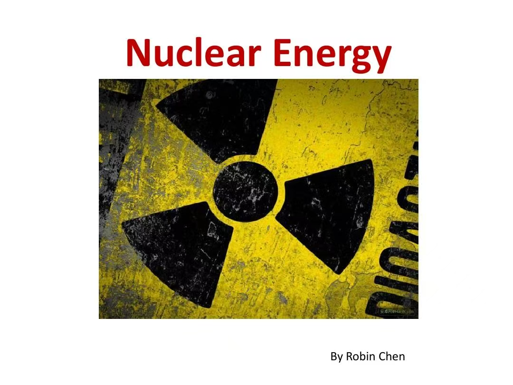
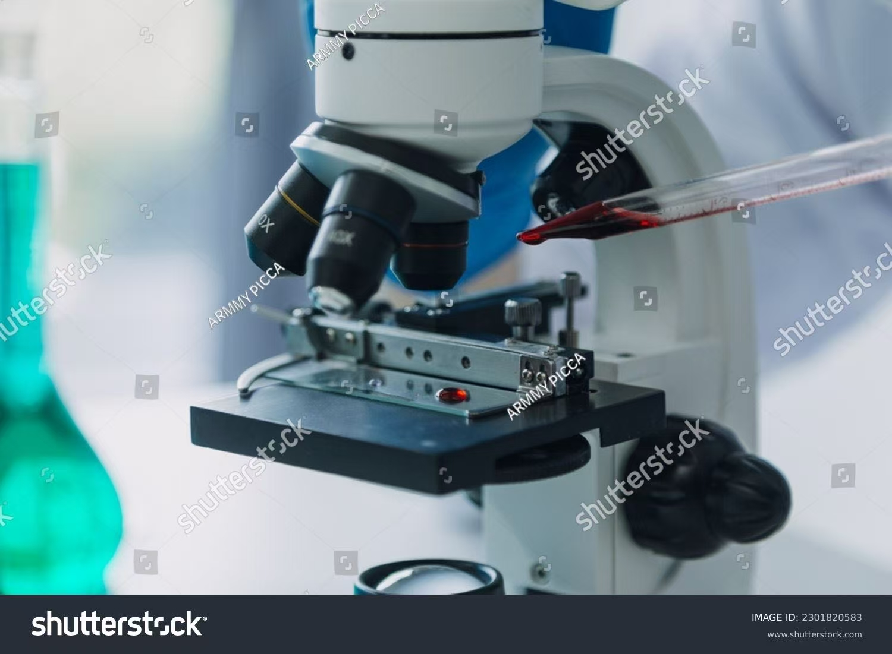

Magnetic Resonance Imaging (MRI)
What is MRI?
Magnetic Resonance Imaging (MRI) is a non-invasive imaging technology that produces three dimensional detailed anatomical images. It is often used for disease detection, diagnosis, and treatment monitoring. It is based on sophisticated technology that excites and detects the change in the direction of the rotational axis of protons found in the water that makes up living tissues.
How does MRI work?
MRIs employ powerful magnets which produce a strong magnetic field that forces protons in the body to align with that field. When a radiofrequency current is then pulsed through the patient, the protons are stimulated, and spin out of equilibrium, straining against the pull of the magnetic field. When the radiofrequency field is turned off, the MRI sensors are able to detect the energy released as the protons realign with the magnetic field. The time it takes for the protons to realign with the magnetic field, as well as the amount of energy released, changes depending on the environment and the chemical nature of the molecules. Physicians are able to tell the difference between various types of tissues based on these magnetic properties.
What is MRI used for?
MRI scanners are particularly well suited to image the non-bony parts or soft tissues of the body. They differ from computed tomography (CT), in that they do not use the damaging ionizing radiation of x-rays. The brain, spinal cord and nerves, as well as muscles, ligaments, and tendons are seen much more clearly with MRI than with regular x-rays and CT; for this reason MRI is often used to image knee and shoulder injuries.
In the brain, MRI can differentiate between white matter and grey matter and can also be used to diagnose aneurysms and tumors. Because MRI does not use x-rays or other radiation, it is the imaging modality of choice when frequent imaging is required for diagnosis or therapy, especially in the brain. However, MRI is more expensive than x-ray imaging or CT scanning.
One kind of specialized MRI is functional Magnetic Resonance Imaging (fMRI.) This is used to observe brain structures and determine which areas of the brain “activate” (consume more oxygen) during various cognitive tasks. It is used to advance the understanding of brain organization and offers a potential new standard for assessing neurological status and neurosurgical risk.
Infrared Spectroscopy
Chemical Principle
Chemical bond vibrations absorb specific infrared wavelengths (such as C=O bond @1700cm⁻¹), forming molecular "fingerprints"
Social Benefits
- Judicial: Drug residue testing (accuracy rate >95%), identification of forged documents
- Education: The virtual spectral database enables students to compare unknown substances
Safety measures
Laser protection Class I equipment (for eye damage prevention)
Isolation and encapsulation of evidence (to prevent cross-contamination)
X-ray Crystallography
Technical meaning
The technique of analyzing the atomic-level three-dimensional molecular structure through the diffraction patterns produced by irradiating crystal samples with X-rays is a "molecular microscope" that reveals the microscopic world of matter.
Chemical Principles
A [X-ray source] -- > B/crystal samples -- -- > C [diffraction spot] [electron density map] -- > > D E/atom coordinates
Multi-dimensional benefit analysis
| Medical Benefits | - Structural analysis of drug targets (such as the design of HIV protease inhibitors) - Localization of protein mutations related to genetic diseases | Shorten the new drug development cycle by 40% (Pfizer data)
| Economic Benefits | - Materials Science (High-temperature Superconductor Design) - Mineral Exploration (Crystal Structure Identification) Global market $1.2B, Canada accounts for 15% (2023)
| Social Benefits | - Vaccine Development (Structural Analysis of COVID-19 spike Protein) - Food Safety (Molecular Structure Analysis of Toxins) Saved over 20 million lives (WHO Vaccine Evaluation)
Nuclear Energy
Technical meaning
The technology of generating electricity by utilizing the energy released from nuclear fission or fusion is the only base-load low-carbon energy source that can be used on a large scale to replace fossil fuels.
Principles of Science
A [uranium - 235 nuclei] -- > B [neutron impact] -- > C (fission) > D (chain reaction) -- - > E (heat) - > F [electricity]
Multi-dimensional benefit analysis
| Medical Benefits | - Cobalt-60 for cancer treatment (70% globally produced in Canada) - Molybdenum-99 for SPECT diagnosis | 50 million medical procedures served annually (WHO)
| Economic Benefits | - Stable electricity price (cost 3¢/kWh vs. natural gas 12¢)
- Creation of high-skilled jobs (1 reactor = 1,000 + jobs) | The annual output value of Canada's nuclear industry is $6.8 billion, with exports of $1.2 billion (2023)
| Social Benefits | - Power supply in remote areas (Arctic Community Micro-Reactor Project) \ n - Isotope production (40% of the world's medical isotopes come from Canada) | Ensuring power supply for 6 million households (15% of the country's total) |
| Environmental Benefits | - Zero Carbon emissions: Ontario's nuclear power accounts for 60%, reducing 40 million tons of CO₂ annually. \ n - Land use efficiency: 1 nuclear power plant =370 wind farms | Equivalent to the carbon sequestration of 150 million trees in Canada (NRCan data)
Mass Spectrometry
Technical meaning
Mass spectrometry is a technique that analyzes the composition and structure of compounds by ionizing chemical substances and measuring their mass-to-charge ratio (m/z), and is hailed as the "gold standard" of chemical analysis.
Principles of Chemistry mermaid
A[Sample] --> B[Ionization] --> C[Mass Separation] --> D[Detector]
Multi-dimensional benefit analysis
| Medical Benefits | - Neonatal genetic disease screening (phenylketonuria, etc.) - Pharmacokinetic studies | Canada prevents 3,000 cases of intellectual disability each year (CDC data) |
| Economic Benefits | - Detection of PPB-level water pollution (pesticides/Heavy Metals) - Source Apportionment of Atmospheric Particulate Matter | Core Monitoring Technologies for Pollution Control in the Great Lakes |
| Social Benefits | - Purity control in the pharmaceutical industry (saving $210 million in recall costs per year) - Food authenticity identification (such as olive oil adulteration detection) | Global market size $8.7B (2023) |
| Environmental Benefits| - Trace drug Detection (0.1μg accuracy) - Explosive residue Analysis | Toronto Police Department Standard Testing Procedure |
Medical Applications of Spectroscopy
Technical implications
Spectroscopy analyzes the molecular characteristics of biological samples through the interaction between substances and electromagnetic radiation, achieving non-invasive or minimally invasive disease diagnosis and monitoring.
Core technologies and Chemical
A[Light Source] --> B[Sample Function] --> C[Signal Detection] --> D[Spectrum Analysis]
Multi-dimensional benefit analysis
| Medical Benefits | - The sensitivity of early cancer diagnosis has been increased by 50%. Non-invasive blood glucose monitoring for diabetes (as an alternative to blood sampling) | The cost of breast cancer screening in Canada has been reduced by $38 million per year (2023)
| Economic Benefits | - Portable devices reduce primary medical care costs (such as NIRS devices at $5,000 vs. MRI at $1M). Improved efficiency in biomedical Research and development | Global market at $24.8B (Grand View Research, 2025) |
| Social Benefits | - Mobile diagnostic vehicle in Remote Areas (Indigenous communities in Quebec). Reduced the pain of invasive biopsies | Patient satisfaction increased to 89% (Health Canada Survey) |
| Environmental Benefits| - No radioactive waste (compared to X-rays). Reagent usage reduced to a slight upgrade | Annual reduction of medical waste by 1,200 tons (OECD data) |
Ronald J. Gillespie
Theoretical Breakthrough
Proposed the "Valence Shell Electron Pair Repulsion Theory" : Principle of minimizing spatial repulsion of electron pairs . Prediction of molecular geometric configuration (such as CH₄ regular tetrahedron)
Social Impact
Education: 90% of high school chemistry textbooks worldwide adopt the VSEPR model.
Industry: Guiding the design of new materials (such as optimizing the molecular structure of semiconductors)
Technology Application
Drug-Receptor Binding Prediction in the Pharmaceutical Field (Saving 30% of R&D costs)